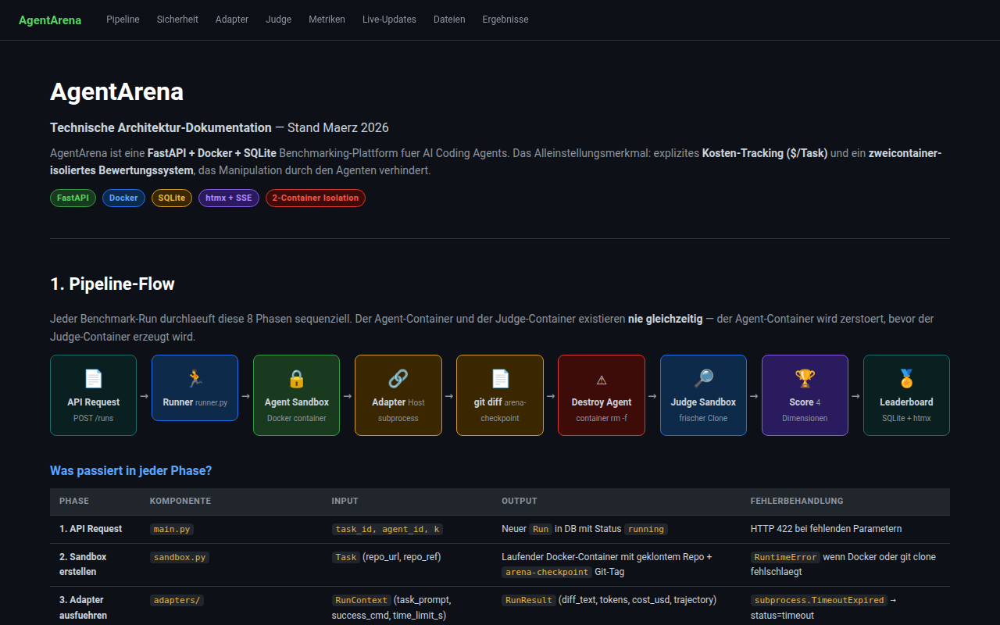
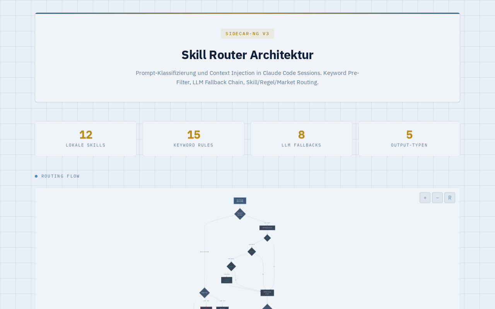

Safe to claim
Local tools, docs, run artifacts, dashboards, and evaluation loops exist. They show repeated contact with agent failure modes: drift, weak verification, invalid comparisons, scope creep, and missing human ownership.
Technical proof / due diligence
For technical buyers: HAI is grounded in attempts to measure, falsify, gate, and control real agent workflows. The point is not a shiny benchmark. The point is knowing when the evidence is valid and when it is not.
Claim boundary
The useful claim is narrow: Samuel has built and broken evaluation/control surfaces for agent workflows, and he knows where eval evidence can lie.
Local tools, docs, run artifacts, dashboards, and evaluation loops exist. They show repeated contact with agent failure modes: drift, weak verification, invalid comparisons, scope creep, and missing human ownership.
This is not third-party audited performance, not customer ROI data, not a public benchmark, and not a guarantee of safe autonomous agents. It is technical proof of method formation.
Primary cases
Each case is framed by the same question: what did the project reveal about trusting agents in real technical workflows?
AgentArena explored the gap between an agent saying it completed a task and a buyer being able to compare the result. It used task YAMLs, adapters, local run storage, cost tracking, diff/trajectory metrics, and judge-side verification to make agent behavior inspectable.
Do not call this a public benchmark or quote a clean success rate. The DB schema evolved and old status fields disagree with stored metric JSON.

This Aider plus SWE-bench Lite harness tested whether small Markdown policy changes could measurably change coding-agent behavior. It produced run artifacts, summaries, a local DB, a cockpit, and the important negative result: many runs were not valid evidence.
Do not claim the Karpathy-style policy won or that GPT-5.5 was fairly compared. The honest proof is the validity gate: bad evidence did not become a conclusion.

Sidecar-NG wrapped Claude Code with prompt-time policy, mode-specific context injection, deterministic PreTool safety gates, and local eval artifacts. The lesson was precise: bounded hooks plus eval loops are more useful than a large observer system that cannot prove it helped.
Publish as an internal local eval only. Do not claim production monitoring, guaranteed safety, or independent benchmark performance.

Supporting evidence
These are not primary proof cards. They are useful because they show how the same HAI logic appears in telemetry, handoff contracts, prompt compilation, evidence rules, and private eval loops.
A telemetry and harness-comparison surface for making token pressure, scope discipline, and model-vs-harness confusion visible. Good supporting proof for evidence boundaries; not a controlled performance benchmark.
A spec-first contract spine for traceable handoffs: task, routing, execution, artifacts, events, and evals modeled as shared objects. Useful proof of architecture thinking; not a shipped runtime.
The evidence-discipline layer behind the work: claims need scope, baseline, intervention, measurement, artifacts, falsifiers, transfer limits, and a next clean test. Strong proof of method governance; private notes and raw databases stay out.
A prompt-compiler and eval layer that turns raw intent into harness- and model-aware task specs with boundaries, verification gates, and no-new-facts checks. Strong proof of control before orchestration; not proof that prompts universally improve model output.
A small visible eval harness for prompt iteration: fixed task set, player/referee prompts, run metadata, warning taxonomy, summaries, and human-gated comparison. Useful as private mechanics proof; transcripts and personal/self-analysis material are not public evidence.
Customer transfer
If your team is adding agents to coding, operations, research, or internal workflows, the hard part is often not output. It is knowing which run counts, which claim is valid, where the human must approve, and where the system is drifting.